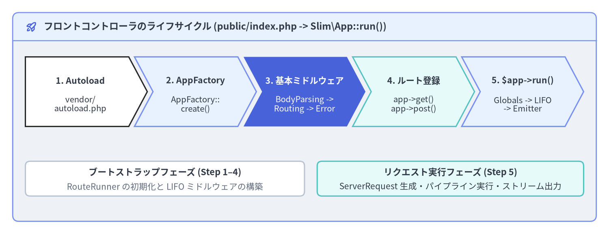
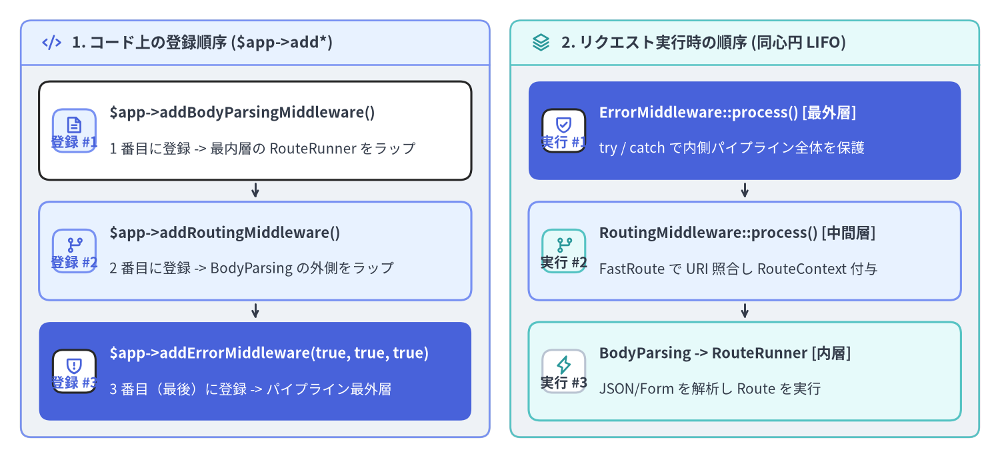

クイックスタートと基本ミドルウェア
Slim 4（v4.15.3）アプリケーションの最小構成に必要なのは、slim/slim パッケージと任意の PSR-7 / PSR-17 HTTP メッセージ実装、そして単一のフロントコントローラ（public/index.php）だけです。本ページでは、Composer によるインストール手順、declare(strict_types=1); と AppFactory::create() を用いたフロントコントローラの作成、LIFO（後入れ先出し）順序に基づく 3 つの基本ミドルウェア（Middleware Triad：BodyParsingMiddleware、RoutingMiddleware、ErrorMiddleware） の設定、およびローカル開発サーバでの動作確認手順を解説します。

Source Code
from drawlib.canvas import save, setup
from drawlib.icons import phosphor
from drawlib.shapes import rectangle
from drawlib.smartarts import ChevronProcess, Panel
from drawlib.styles import Colors, Styles
from drawlib.text import text
setup(width=192, height=74, dpi=150)
outer = Panel(
"フロントコントローラのライフサイクル (public/index.php -> Slim\\App::run())",
style=Styles.Neutral.patch(shape_r=2.0),
header_style=Styles.PrimaryNeutral.patch(shape_line_width=1.2),
text_style=Styles.DarkBold.patch(text_size=11.2),
icon=phosphor.rocket_launch,
icon_style=Styles.PrimaryBold,
header_variant="filled",
header_height=8.8,
)
outer.draw((4.0, 4.0), width=184.0, height=66.0)
proc = ChevronProcess(
style=Styles.White,
text_style=Styles.DarkBold.patch(text_size=10.2),
description_style=Styles.Dark.patch(text_size=9.8),
corner_angle=62.0,
spacing=1.8,
flat_left_end=True,
)
proc.add(
"1. Autoload",
description="vendor/\nautoload.php",
style=Styles.White,
)
proc.add(
"2. AppFactory",
description="AppFactory::\ncreate()",
style=Styles.PrimaryNeutral,
)
proc.add(
"3. 基本ミドルウェア",
description="BodyParsing ->\nRouting -> Error",
style=Styles.PrimaryFlat,
text_style=Styles.WhiteBold.patch(text_size=10.2),
description_style=Styles.White.patch(text_size=9.8),
)
proc.add(
"4. ルート登録",
description="app->get()\napp->post()",
style=Styles.SecondaryNeutral,
)
proc.add(
"5. $app->run()",
description="Globals -> LIFO\n-> Emitter",
style=Styles.PrimaryNeutral,
)
proc.draw(xy=(8.0, 34.0), width=176.0, height=22.0)
rectangle((52.0, 17.5), width=88.0, height=11.0, style=Styles.White.patch(shape_r=1.5, shape_line_color=Colors.Gray4))
text((52.0, 19.5), "ブートストラップフェーズ (Step 1–4)", style=Styles.DarkBold.patch(text_size=10.5))
text((52.0, 15.0), "RouteRunner の初期化と LIFO ミドルウェアの構築", style=Styles.Muted.patch(text_size=10.0))
rectangle((142.0, 17.5), width=84.0, height=11.0, style=Styles.SecondaryNeutral.patch(shape_r=1.5))
text((142.0, 19.5), "リクエスト実行フェーズ (Step 5)", style=Styles.DarkBold.patch(text_size=10.5))
text((142.0, 15.0), "ServerRequest 生成・パイプライン実行・ストリーム出力", style=Styles.Dark.patch(text_size=10.0))
save()
Composer によるインストールと PSR-7 実装の選択
Slim 4 はルーティングおよびミドルウェアのコアを特定の HTTP メッセージパッケージから分離しているため、slim/slim とあわせて任意の PSR-7（psr/http-message）および PSR-17（psr/http-factory）実装をインストールします。一般的なプロジェクトでは、公式実装である slim/psr7、または高速・省メモリな単一ファクトリ実装である nyholm/psr7 + nyholm/psr7-server のいずれかが推奨されます。
# 方法 A: 公式の slim/psr7 実装とあわせて Slim 4 をインストール（標準推奨）
composer require slim/slim:"^4.15" slim/psr7:"^1.7"
# 方法 B: 軽量・高速な Nyholm PSR-7 & ServerRequest 生成器とあわせてインストール
composer require slim/slim:"^4.15" nyholm/psr7:"^1.8" nyholm/psr7-server:"^1.1"
以下の 5 つの PSR-17 / PSR-7 パッケージはすべて AppFactory::create() および ServerRequestCreatorFactory::create() によって自動検出されるため、追加の設定なしでそのまま利用できます。
| PSR-7 / PSR-17 実装 | Composer インストールコマンド | 主な特徴と選択基準 |
|---|---|---|
| Slim PSR-7 (優先度 1) | composer require slim/psr7 |
Slim 公式の標準実装。追加パッケージなしで PSR-7 / PSR-17 に完全準拠 |
| HttpSoft (優先度 2) | composer require httpsoft/http-message httpsoft/http-server-request |
シンプルで軽量な PSR-7 / PSR-17 実装 |
| Nyholm PSR-7 (優先度 3) | composer require nyholm/psr7 nyholm/psr7-server |
単一クラスの Psr17Factory を備えた超軽量・高スループット向け実装 |
| Laminas Diactoros (優先度 4) | composer require laminas/laminas-diactoros |
Laminas プロジェクトによる実績豊富なエンタープライズ向け実装 |
| Guzzle PSR-7 (優先度 5) | composer require guzzlehttp/psr7 |
外部 API 通信用に guzzlehttp/guzzle を導入済みのプロジェクトに最適 |
ディレクトリ構成とフロントコントローラ（public/index.php）
小規模なマイクロサービスであっても、index.php や vendor/ を公開ドキュメントルート直下に配置してはいけません。Web サーバの公開ディレクトリ（Document Root）は必ず public/ のみに限定し、vendor/、src/、config/ は 1 階層上のプロジェクトルートに配置します。
public/index.php を作成し、先頭に declare(strict_types=1); を記述します。
<?php
declare(strict_types=1);
use Psr\Http\Message\ResponseInterface as Response;
use Psr\Http\Message\ServerRequestInterface as Request;
use Slim\Factory\AppFactory;
require __DIR__ . '/../vendor/autoload.php';
// 自動検出された PSR-17 ResponseFactory を用いて Slim\App を生成
$app = AppFactory::create();
// 1. application/json, application/x-www-form-urlencoded, XML ボディを自動パース
$app->addBodyParsingMiddleware();
// 2. FastRoute パターン照合を実行し、RouteContext 属性を Request に付与
$app->addRoutingMiddleware();
// 3. ErrorMiddleware は必ず「最後」に追加し、LIFO の最外層で例外をキャッチさせる
$errorMiddleware = $app->addErrorMiddleware(
displayErrorDetails: true,
logErrors: true,
logErrorDetails: true
);
$app->get('/hello/{name}', function (Request $request, Response $response, array $args): Response {
$payload = json_encode([
'message' => sprintf('Hello, %s!', $args['name']),
], JSON_THROW_ON_ERROR);
$response->getBody()->write($payload);
return $response->withHeader('Content-Type', 'application/json');
})->setName('greeting.hello');
$app->post('/api/v1/echo', function (Request $request, Response $response): Response {
$body = (array) $request->getParsedBody();
$payload = json_encode([
'received' => $body,
], JSON_THROW_ON_ERROR);
$response->getBody()->write($payload);
return $response
->withStatus(201)
->withHeader('Content-Type', 'application/json');
});
$app->run();
3 つの基本ミドルウェア（Middleware Triad）と LIFO 実行順序
Slim 4 の Slim\App（Slim/App.php:125-175）には、基本ミドルウェアを登録するための 3 つのヘルパーメソッドが用意されています。Slim\MiddlewareDispatcher はミドルウェアを LIFO（後入れ先出し：Last-In, First-Out）の同心円スタックとして管理するため、コード上の登録順序と実行時の順序が逆転する点を正確に理解しておく必要があります。

Source Code
from drawlib.canvas import save, setup
from drawlib.icons import phosphor
from drawlib.smartarts import CardList, Panel
from drawlib.styles import Colors, Styles
setup(width=192, height=88, dpi=150)
p_left = Panel(
"1. コード上の登録順序 ($app->add*)",
style=Styles.Neutral.patch(shape_r=2.0),
header_style=Styles.PrimaryNeutral.patch(shape_line_width=1.2),
text_style=Styles.DarkBold.patch(text_size=11.0),
icon=phosphor.code,
icon_style=Styles.PrimaryBold,
header_variant="filled",
header_height=8.5,
)
p_left.draw((4.0, 4.0), width=90.0, height=80.0)
lx, lw, lh = p_left.get_content_box((4.0, 4.0), width=90.0, height=80.0, padding=(3.5, 3.2))
cl_left = CardList(
style=Styles.White,
text_style=Styles.DarkBold.patch(text_size=10.5),
description_style=Styles.Dark.patch(text_size=10.0),
badge_shape="rounded_rect",
badge_style=Styles.PrimaryNeutral,
badge_text_style=Styles.PrimaryBold.patch(text_size=10.0),
icon_style=Styles.PrimaryBold,
direction="vertical",
spacing=3.0,
show_arrows=True,
arrow_style=Styles.DarkBold.patch(line_arrow_head_scale=10, line_width=1.4),
)
cl_left.add(
"$app->addBodyParsingMiddleware()",
"1 番目に登録 -> 最内層の RouteRunner をラップ",
badge_text="登録 #1",
icon=phosphor.file_text,
)
cl_left.add(
"$app->addRoutingMiddleware()",
"2 番目に登録 -> BodyParsing の外側をラップ",
badge_text="登録 #2",
icon=phosphor.git_branch,
style=Styles.PrimaryNeutral,
)
cl_left.add(
"$app->addErrorMiddleware(true, true, true)",
"3 番目（最後）に登録 -> パイプライン最外層",
badge_text="登録 #3",
icon=phosphor.shield_warning,
style=Styles.PrimaryFlat,
text_style=Styles.WhiteBold.patch(text_size=10.5),
description_style=Styles.White.patch(text_size=10.0),
badge_style=Styles.White,
badge_text_style=Styles.PrimaryBold.patch(text_size=10.0),
icon_style=Styles.PrimaryBold,
)
cl_left.draw(xy=lx, width=lw, height=lh)
p_right = Panel(
"2. リクエスト実行時の順序 (同心円 LIFO)",
style=Styles.Neutral.patch(shape_r=2.0),
header_style=Styles.SecondaryNeutral.patch(shape_line_width=1.2),
text_style=Styles.DarkBold.patch(text_size=11.0),
icon=phosphor.stack,
icon_style=Styles.SecondaryBold,
header_variant="filled",
header_height=8.5,
)
p_right.draw((98.0, 4.0), width=90.0, height=80.0)
rx, rw, rh = p_right.get_content_box((98.0, 4.0), width=90.0, height=80.0, padding=(3.5, 3.2))
cl_right = CardList(
style=Styles.White,
text_style=Styles.DarkBold.patch(text_size=10.5),
description_style=Styles.Dark.patch(text_size=10.0),
badge_shape="rounded_rect",
badge_style=Styles.SecondaryNeutral,
badge_text_style=Styles.DarkBold.patch(text_size=10.0),
icon_style=Styles.SecondaryBold,
direction="vertical",
spacing=3.0,
show_arrows=True,
arrow_style=Styles.DarkBold.patch(line_arrow_head_scale=10, line_width=1.4),
)
cl_right.add(
"ErrorMiddleware::process() [最外層]",
"try / catch で内側パイプライン全体を保護",
badge_text="実行 #1",
icon=phosphor.shield_check,
style=Styles.PrimaryFlat,
text_style=Styles.WhiteBold.patch(text_size=10.5),
description_style=Styles.White.patch(text_size=10.0),
badge_style=Styles.White,
badge_text_style=Styles.PrimaryBold.patch(text_size=10.0),
icon_style=Styles.PrimaryBold,
)
cl_right.add(
"RoutingMiddleware::process() [中間層]",
"FastRoute で URI 照合し RouteContext 付与",
badge_text="実行 #2",
icon=phosphor.git_branch,
style=Styles.PrimaryNeutral,
)
cl_right.add(
"BodyParsing -> RouteRunner [内層]",
"JSON/Form を解析し Route を実行",
badge_text="実行 #3",
icon=phosphor.lightning,
style=Styles.SecondaryNeutral,
badge_style=Styles.White.patch(shape_line_color=Colors.Gray4),
badge_text_style=Styles.DarkBold.patch(text_size=10.0),
)
cl_right.draw(xy=rx, width=lw, height=lh)
save()
3 つの基本ミドルウェアの役割と推奨登録順序は以下の通りです。
Slim\App のヘルパーメソッド |
実体クラス（Slim\Middleware\*） |
コード上の登録順序 | 主な役割と動作仕様 |
|---|---|---|---|
$app->addBodyParsingMiddleware(array $bodyParsers = []) |
BodyParsingMiddleware |
1 番目（最内層） | application/json、application/x-www-form-urlencoded、application/xml / text/xml ストリームを解析し $request->getParsedBody() に格納 |
$app->addRoutingMiddleware() |
RoutingMiddleware |
2 番目（中間層） | RouteResolver::computeRoutingResults() を実行し、RouteContext::ROUTE（__route__）等の属性を $request に付与 |
$app->addErrorMiddleware(bool $displayErrorDetails, bool $logErrors, bool $logErrorDetails, ?LoggerInterface $logger = null) |
ErrorMiddleware |
3 番目 / 最後（最外層） | パイプライン全体を try / catch (Throwable $e) で包み、404 / 405 / 500 例外を適切な HTTP レスポンスへ変換 |
[!IMPORTANT]
addErrorMiddleware()を必ず最後に追加する理由: もし誤ってaddErrorMiddleware()をaddRoutingMiddleware()より前に記述してしまうと、実行時にはRoutingMiddlewareがErrorMiddlewareの外側で動くことになります。その状態で存在しない URL にアクセスすると、RoutingMiddlewareが投げるHttpNotFoundExceptionがErrorMiddlewareに捕捉されず、PHP の未捕捉例外（Fatal Error）となってしまいます。
また、マッチしたルート情報（RouteContext::fromRequest($request)->getRoute()）を参照するカスタムミドルウェア（認可ガードや監査ログなど）を追加する場合は、コード上では $app->addRoutingMiddleware() の前に登録することで、実行時に RoutingMiddleware の後（内側）で動作させることができます。
<?php
declare(strict_types=1);
use Psr\Http\Message\ResponseInterface;
use Psr\Http\Message\ServerRequestInterface;
use Psr\Http\Server\RequestHandlerInterface;
use Slim\Factory\AppFactory;
use Slim\Routing\RouteContext;
$app = AppFactory::create();
// 1. JSON / フォームボディのパース（最内層）
$app->addBodyParsingMiddleware();
// 2. addRoutingMiddleware() の「前」に登録したミドルウェアは、実行時にはルーティングの「後」に動く
$app->add(function (ServerRequestInterface $request, RequestHandlerInterface $handler): ResponseInterface {
$routeContext = RouteContext::fromRequest($request);
$route = $routeContext->getRoute();
$routeName = $route ? ($route->getName() ?? 'unnamed') : 'unmatched';
$response = $handler->handle($request);
return $response->withHeader('X-Matched-Route', $routeName);
});
// 3. 上記カスタムミドルウェアより先に FastRoute によるルート解決を実行する
$app->addRoutingMiddleware();
// 4. 最外層の例外キャッチ境界（常に最後に登録）
$app->addErrorMiddleware(displayErrorDetails: true, logErrors: true, logErrorDetails: true);
ビルトイン PHP サーバおよび Docker でのローカル起動
ローカル開発を効率化するため、composer.json に PSR-4 オートロード設定（"App\\": "src/"）と、public/ をドキュメントルートとして PHP ビルトイン Web サーバを起動する "start" スクリプトを定義します。
{
"name": "acme/slim4-starter",
"description": "Slim 4.15.3 microservice starter",
"type": "project",
"license": "MIT",
"require": {
"php": "^8.1",
"slim/psr7": "^1.7",
"slim/slim": "^4.15"
},
"autoload": {
"psr-4": {
"App\\": "src/"
}
},
"scripts": {
"start": [
"Composer\\Config::disableProcessTimeout",
"php -S localhost:8080 -t public"
]
}
}
開発サーバを起動し、curl コマンドでルートハンドラおよび BodyParsingMiddleware、ErrorMiddleware の動作を確認します。
# http://localhost:8080 で PHP ビルトイン開発サーバを起動
composer start
# URL パラメータ付き GET ルートの動作確認
curl -i http://localhost:8080/hello/Slim4
# BodyParsingMiddleware による JSON ボディ自動パースの動作確認
curl -i -X POST http://localhost:8080/api/v1/echo \
-H "Content-Type: application/json" \
-d '{"service":"billing","version":4}'
# 未定義パスへのリクエストが ErrorMiddleware に捕捉され 404 JSON になることを確認
curl -i -H "Accept: application/json" http://localhost:8080/unknown-path
最小構成のエンドポイントと 3 つの基本ミドルウェアが動作したら、次は 第 2 章：モジュラー設計と Action コントローラ および PSR-11 コンテナと Callable 解決 へ進み、実運用に向けたディレクトリ分割、Single-Action Controller、PHP-DI による自動ワイヤリング手法を学びましょう。前ページの Slim 4 の設計思想と PSR 標準 や、関連ポータルの Slim 4 API リファレンス・Slim 4 内部アーキテクチャ解説 もあわせてご活用ください。